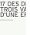

la revue nécessaire #2, 2010
la revue nécessaire #2, 2010Édition
Le vivant-Vivant
dirigée par Guillaume du Boisbaudry, 192 pages
consultable et téléchargeable sur http://necessaire.eu
Texte, 17 DES 253 VARIATIONS AUTOUR D'UNE EFFERVESCENCE λ, 2009
pages 176 à 183

|
||
|
la revue nécessaire #2, 2010 Édition Le vivant-Vivant dirigée par Guillaume du Boisbaudry, 192 pages consultable et téléchargeable sur http://necessaire.eu Texte, 17 DES 253 VARIATIONS AUTOUR D'UNE EFFERVESCENCE λ, 2009 pages 176 à 183 |
|
|  | |